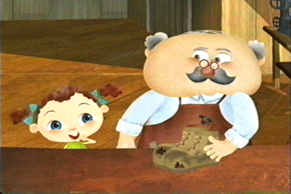
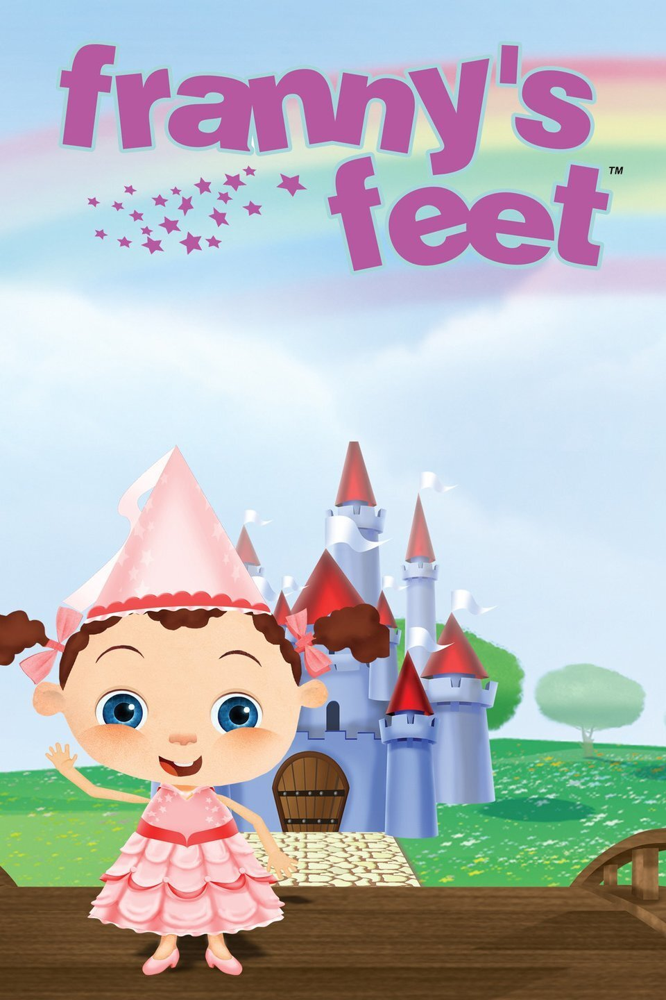

Franny’s Feet


Details
My notes
I remember a girl whose shoes took her to different places. I also remembered the opening song, especially “One step at a time”. This is the show.
Identification
Confirmed as Franny’s Feet from the remembered opening song and the girl trying on shoes that take her on adventures.
About the show
Franny spends afternoons in her grandpa’s shoe-repair shop. Trying on a customer’s shoes transports her to another place, where she meets people and learns through an adventure. Back in the shop, the shoes connect the ordinary world with the places she has explored.
The remembered music
The composer’s official page credits the opening theme to Amin Bhatia and Ari Posner, and the musical underscore to Meiro Stamm and Amin Bhatia. The familiar song was the clue that brought this memory back.
Things to recognise
- The shoe-repair shop and Grandpa’s counter.
- Franny trying on different pairs of shoes.
- A new place and adventure linked to the footwear.
- The opening song about taking steps and exploring.